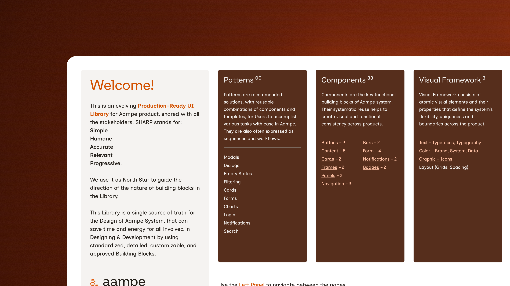
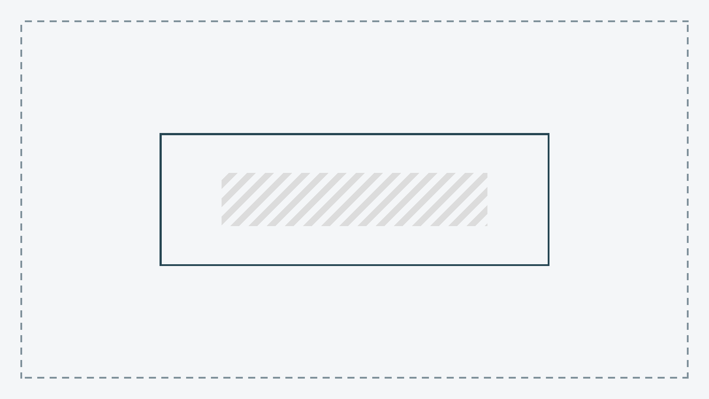
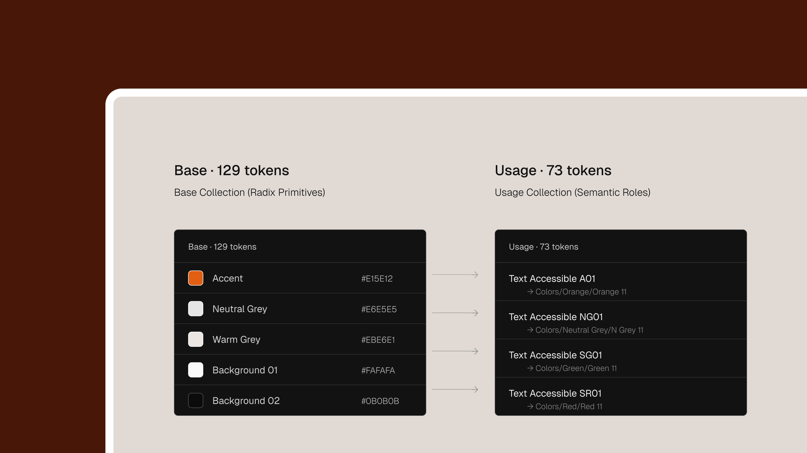
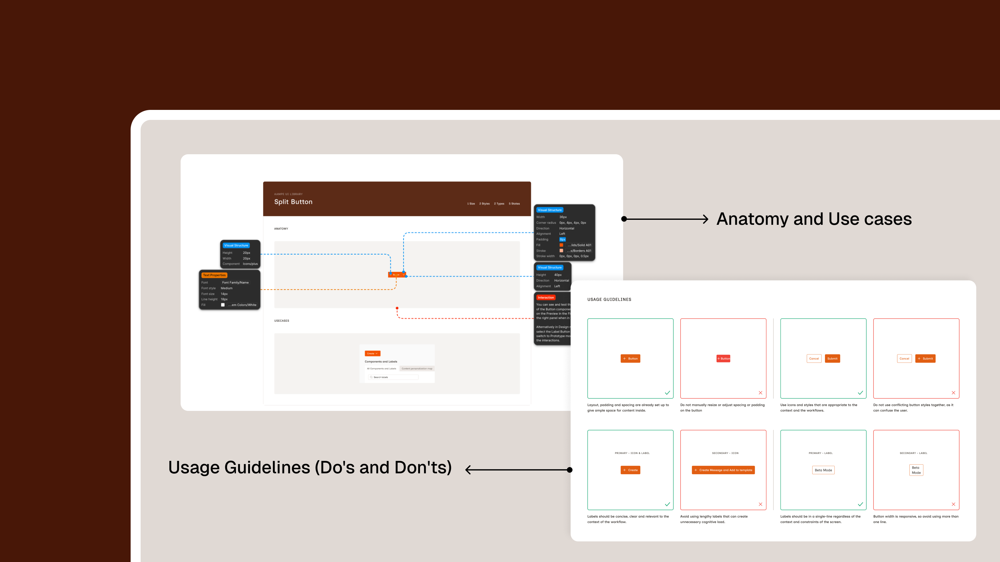

UI Design Library for Aampe — an Agentic Personalisation Platform. Built in phases to support a live product rebrand without disrupting existing users.

HueGrid was brought in to rebrand and redesign the entire Aampe product — an AI personalization platform used by growth teams at Swiggy, Glide, and similar companies. ArjunPhlox gave me ownership of the design system and parts of the brand work. One of the most complete opportunities I'd had in my career.
But Aampe already had clients using the product daily. We couldn't ship a new design overnight. So we phased it — build the system foundation first, reskin the old components second, then create everything new on top. 50+ documented components, 60+ Figma variables on Radix color scales, and light and dark modes.
Aampe already had a live product with paying clients. The component library had grown organically alongside the product — varying spacing, naming conventions, and interaction patterns. Documentation hadn't kept pace, so developers worked from context and memory. Colors were hardcoded rather than tokenized, making updates slow and dark mode infeasible.
The product needed a rebrand and a redesign. But users were already there. Whatever we did had to land without disrupting their daily workflow.

HueGrid and the Aampe team set the migration strategy together. With live clients depending on the product, we couldn't rebuild everything at once. We phased it.
I started by auditing everything that existed in Aampe — collecting, documenting, and mapping the full component landscape. From there, I created the structural foundation: tokens, naming conventions, and a component inventory that served both frontend development and design consistency. This gave every designer on the team a clear map of what was solid and could carry forward, what needed rework, and what had to be created from scratch.
Apply the new colors, typography, and spacing to the existing component structures. Same layouts, same interactions, new visual identity. This let users absorb the new brand gradually without their workflows changing underneath them.
New components, new flows, and updated product patterns — built on top of the foundation from Phase 1. By this point, users had already adjusted to the new brand language, so the structural changes wouldn't land alongside unfamiliar colors and type.
This approach meant building the system in layers rather than all at once. More deliberate, but the right trade-off for a live product with active users.
I created 60+ Figma variables organized into three layers:
This hierarchy made dark mode a natural output of the structure, not a separate palette to maintain.

Under ArjunPhlox's creative direction, I developed the color palette shades using Radix scales and contributed to the brand deck. ArjunPhlox set the brand direction — I built the systematic implementation with proper shades, accessibility compliance, and token-ready structure.
The difference between a component library and a design system is documentation. Building components was the more straightforward part. Building a documentation structure that makes the system usable by people who didn't build it — that was the harder work.
Every component follows the same template: anatomy (labeled diagram of every part), component master (all variants, states, sizes in one view), use cases (real examples from the product), and do's and don'ts (boundary rules for designers and developers).
This template is the handoff file. Developers don't receive a separate spec — the documentation page is the spec. Questions about component behavior dropped to near zero.

Aampe is an agentic AI tool. Some of its UI patterns don't exist in standard design systems — components like structured property selectors inside text inputs, where users pick and configure properties inline. No established pattern to reference. I designed these from scratch, documented them to the same standard, and made sure they fit the system without becoming special cases.
Together, these pieces turned the rebrand from a visual refresh into a usable system: tokens, components, documentation, and product patterns that could keep scaling after handoff.
I'd built component libraries before. But this was the first time I created a system with this level of rigor — standardized anatomy diagrams, documented use cases, explicit usage guidelines for every component.
The shift from "library builder" to "system author" changed how I think about design infrastructure. The system isn't the components. The system is the documentation, the naming, the rules — the layer that lets other people use and extend it without the person who built it in the room.
ArjunPhlox led brand strategy and creative direction. The visual language, brand positioning, and aesthetic decisions came from him. The migration strategy was a joint decision between HueGrid and the Aampe team. My job was to own the execution — the design system architecture and the color palette implementation.
I didn't decide what Aampe should look like. I built the infrastructure that makes it consistent at scale.